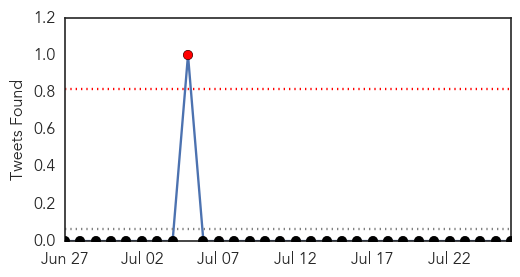

Unknown
30-Day Web Trend
0 alerts, 0 warnings

30-Day Twitter Trend
0 alerts, 0 warnings

Article Locations

Article Confidences
Top Articles:
- 0.997
- S. Korea reports no additional MERS cases for 21st day
- 0.997
- S. Korea reports no additional MERS cases for 21st day
- 0.952
- Health Minister holds review meeting on JE outbreak in Assam, Odisha Current News, Odisha Latest Headlines
- 0.951
- Norwalk Hospital imposes restrictions on visitors
- 0.927
- St. Bernard Parish’s Tap Water Found Contaminated With Brain Eating Amoeba Naegleria Fowleri
- 0.917
- Chicago Tribune
- 0.917
- Chicago Tribune
- 0.910
- Brain-eating amoebas confirmed in Louisiana drinking water
- 0.889
- Deadly Brain-eating Amoeba Found in Louisiana Water Supply
- 0.876
- Salmonella Outbreak Confirmed by Mohawk Council of Akwesasne
- 0.864
- Deadly kiss? Bug could spread deadly disease to the Lowcountry
- 0.832
- Armadillos causing spike in Florida leprosy cases
- 0.823
- Rabbit fever, rare disease spread from animals, insects, found in four ND counties
- 0.768
- UN Welcomes European Regulators` Green Light on Malaria Vaccine
- 0.762
- HIV Self-Testing Kits Will Battle Transfer Among Youth
- 0.732
- Health Officials In All-Out War To Eliminate Brain-eating Amoebas in St. Bernard Parish
- 0.719
- Team of health experts rush to Assam in the wake of Japanese encephalitis outbreak
- 0.708
- The Hantavirus has Been Confirmed in the Texas Panhandle
- 0.698
- An AIDS Crisis in Ukraine
- 0.694
- Louisiana Water System Contains ‘Brain-Eating’ Amoeba, Needs Chlorine Flush: Report : Life & Culture : Yibada
- 0.688
- Doctors' white coats, neckties spread dangerous infections
- 0.683
- Residents and tourists warned about brain-eating amoeba in New Orleans
- 0.658
- As health needs rise in Somalia, funding hits new low
- 0.626
- Brazil Offers Free Early Treatment for HIV
- 0.625
- Spaghetti linked to salmonella poisoning - PRAGUE POST
- 0.591
- U.S. Salmonella Outbreak Tied to Indiana Farm Melons
- 0.569
- Dubai Health Authority discusses heat related illnesses during Twitter clinic.
- 0.567
- World's first malaria vaccination approved after 30 years of trials
- 0.556
- Somalia Health Services Under Red Alert Due to Lack of Funding
- 0.546
- Hot July burns out kids in Telangana
- 0.541
- A Louisiana State health Officials Warn of 'Brain-Eating' Amoeba Found in Water System
- 0.530
- Cardiovascular disease among top ten causes of death
- 0.513
- World’s First Malaria Vaccine receives Positive opinion from European Regulators
- 0.506
- Health officials ramp up HIV outreach efforts in spite of funding cuts
- 0.505
- Doctors: Teen’s HIV in check for 12 years without drugs
Top Tweets:
-
No tweets found for Jul 26, 2015
Dengue Fever
30-Day Web Trend
0 alerts, 0 warnings

30-Day Twitter Trend
0 alerts, 0 warnings

Article Locations

Article Confidences

Top Articles:
Top Tweets:
-
No tweets found for Jul 26, 2015